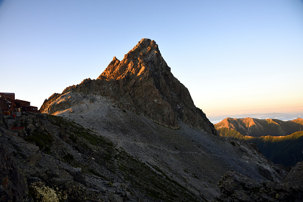

登山が好きな理由
高校時代、ワンダーフォーゲル部という登山やラフティングなどをメインとした部活に入っており、 そのことがきっかけで登山が好きになりました。 険しい道や知らない道を開拓して歩いていくのが新鮮で楽しく、 山頂に着いたときの達成感や感動は何回でも味わいたいものです。
好きな山 TOP3
１.富士山
aaaaaaaaaaaaaaaaaaaaaaaaaaaaaa
2.槍ヶ岳

aaaaaaaaaaaaaaaaaaaaaaaaaaaaaa
３.奥穂高
aaaaaaaaaaaaaaaaaaaaaaaaaaaaaa